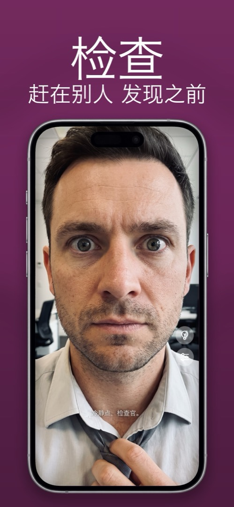

为什么 iPhone 前置摄像头会翻转你的脸？
你对准自拍，预览里一切正常，保存下来的照片却隐隐不对——发缝在另一边，脸好像没那么像你了。没有任何东西坏了。下面解释发生了什么，以及该怎么办。
预览 = 镜子。保存的照片 = 别人眼中的你。
你在构图自拍时，iOS 会把预览做成镜像，让你感觉像在照镜子——动右手，右边的手就动。但当你按下快门，照片会以非镜像保存，也就是站在你对面的人实际看到的样子。
它为什么感觉不对，是有充分研究的：单纯曝光效应。你这辈子每天看到自己镜像的脸成千上万次，所以大脑认定那才是「正确」的版本。没有人的脸是完全对称的，于是非镜像的照片就显得有点偏——只对你自己而言。你的朋友早就习惯了照片里的那个你。
可以改变它的 iOS 设置
从 iOS 14 起有一个开关：设置 → 相机 → 镜像前置摄像头。打开后，自拍会按预览里的样子原样保存。这解决了照片的问题，却没解决把相机 App 当镜子用的根本问题：快门还在拇指下面，前面没有补光，预览上还是堆满控件。
为什么镜子 App 永远是镜像
镜子 App 只有一个任务——像玻璃一样。它没有需要翻转的「保存版本」，所以你看到的永远是你习惯的镜像，亮度最高，需要时还有放大和环形补光。如果你只想检查自己的样子，而不是记录下来，这就是对的工具。
在 Mirrorly 里怎么做
在 Mirrorly 里根本不存在这个问题，因为什么都不会保存。检查仪容：
- 打开 Mirrorly。前置摄像头以真正镜子的镜像启动，并一直保持。
- 该整理的整理——头发、衣领、牙齿。细节用缩放滑块，暗处点灯泡。
- 关掉 App。没有拍照，所以相册里也不会有一个翻转的版本等着你。

Mirrorly 可在 App Store 免费试用。 iPhone 全屏镜子，带环形补光、缩放和最高亮度。免费检查三次，之后一次性购买——没有订阅，不保存照片，无需账号，没有广告。